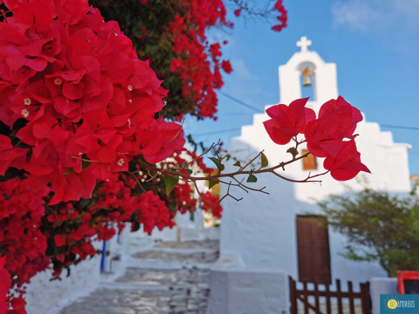

 Στο λιμάνι χορεύουν οι βάρκεσ Απέναντι απο τον αμοργιαλό Χορεύεισ εσύ κι εγώ απ'το κρασί Είμαι βάρκα γιαλόείμαι βάρκα γιαλό Αμοργόσ τι ωραίο νησί Τρείσ και μισή στα ντουζένια εγώ κι εσύ είμαστε ένα Η καλλιόπη στην κάμαρα δίπλα Απ'το μπαλκόνι τον ήλιο θωρεί Να βασιλεύει κι αγναντεύει Μ'ένα μαντήλι στην κεφαλή Αμοργόσ τι ωραίο νησί Στον ποταμό πατατάτο μ'ένα στομάχι χορτάτο Πανηγύρι στον άγιο νικόλα Ρούσσο ζωντάνεψαν οι ζωγραφιέσ Ασφοντυλίτη μου έσπασε η μύτη Απ'τισ μυρωδιέσ ναι απ'τισ μυρωδιέσ Αμοργόσ τι ωραίο νησί Στο πιάτο όλο το αιγαίο με ένα γέλιο πηγαίο Στα θολάρια με τον μανώλη Να λέει ιστορίεσ απο τα παλιά Και με τη σειρά μασ γελούσαν τ'αφτιά μασ Στο καφενείο "καλή καρδιά" Αμοργόσ τι ωραίο νησί Η αργυρώ μ'ένα βλέμμα σκλάβωσε εμένα κι εσένα Αμοργόσ τι ωραίο νησί
Η Αμοργός είναι κυκλαδίτικο νησί του Αιγαίου πελάγους. Πήρε το όνομά της από το φυτό αμοργίς, ένα είδος λιναριού από το οποίο φτιάχνονταν οι «άλικοι αμοργίδες», χιτώνες της Αμοργού. Βρίσκεται στο νοτιοανατολικό άκρο των Κυκλάδων, νοτιοανατολικά της Νάξου και σε απόσταση 136 ναυτικών μιλίων από τον Πειραιά. Η επιφάνειά της εκτιμάται στα 121,464 τ.χλμ., ενώ έχει μήκος ακτών 126 χιλιόμετρα. Είναι μακρόστενο νησί που εκτείνεται από ΝΔ προς ΒΑ με απότομη ορεινή μορφολογία εδάφους. Διαθέτει δύο φυσικά λιμάνια, τα Κατάπολα και την Αιγιάλη. Πρωτεύουσα είναι η Χώρα Αμοργού με κύριο λιμάνι τα Κατάπολα. Ολόκληρος ο δήμος της Αμοργού είχε πληθυσμό 1.961 άτομα[1] στην απογραφή του 2021. Οι κάτοικοι ασχολούνται παραδοσιακά με τη γεωργία, την κτηνοτροφία, την αλιεία καθώς και με τα ναυτικά επαγγέλματα. Πολλοί κάτοικοι ασχολούνταν από τα παλιά χρόνια με τον κλάδο της μελισσουργίας. Τα τελευταία χρόνια ασχολούνται και με τον τομέα του τουρισμού ο οποίος αναπτύσσεται με ραγδαίο ρυθμό. Η Αμοργός αποτελεί ιδανικό προορισμό για πεζοπορία. Υπάρχουν μονοπάτια που ξεκινούν ή/και καταλήγουν σε κάποιον οικισμό και προσφέρουν στον επισκέπτη εκπληκτικές εικόνες φυσικού τοπίου.
Από τα τέλη της 4ης χιλιετίας π.Χ. υπάρχουν ίχνη ανθρώπινης παρουσίας στην Αμοργό. Κατά την αρχαιότητα η Αμοργός γίνεται ένα από τα σημαντικότερα κέντρα του κυκλαδικού πολιτισμού. Αργότερα, κατά τη μινωική εποχή, καταφθάνουν στο νησί πολλοί Μινωίτες ιδρύοντας μία από τις πρώτες πόλεις του νησιού, τη Μινώα. Αργότερα, Ναξιώτες ιδρύουν την Αρκεσίνη, στη σημερινή περιοχή Καστρί και την ίδια εποχή Μιλήσιοι εγκαθίστανται στην Αιγιάλη, κοντά στο σημερινό χωριό Θολάρια. Αυτές ήταν κατά την αρχαιότητα οι σπουδαιότερες πόλεις του νησιού. Στους ρωμαϊκούς χρόνους θα είναι τόπος εξορίας: επί Τιβερίου, το 23 μ.Χ. θα εξοριστεί ο Βέβιος Σειρήνος, ανθύπατος της Ισπανίας.[2][3] Τα βυζαντινά χρόνια δέχεται επιδρομές Πειρατών ενώ ιδρύεται η μονή της Παναγίας της Χοζοβιώτισσας. Το 1207 την καταλαμβάνει ο Μάρκος Σανούδος και ξεκινά η περίοδος της λατινοκρατίας έως το 1537 οπότε επέδραμε ο Χαϊρεντίν Μπαρμπαρόσα και την έθεσε υπό οθωμανική κυριαρχία (1537-1824). Οι Αμοργιανοί ασκούσαν την πειρατεία συστηματικά. Το νησί έχει την ιδιαιτερότητα να διατηρεί μεγάλο πλήθος επιφανών βυζαντινών επωνύμων. Μετά την επανάσταση του 1821 ενσωματώθηκε στο νεοσύστατο ελληνικό κράτος ενώ λίγα χρόνια αργότερα η Αμοργός χρησιμοποιήθηκε πάλι ως τόπος εξορίας. Την περίοδο της κατοχής από τις δυνάμεις του Άξονα εντάσσεται αρχικά στην ιταλική διοίκηση ενώ από το 1943 τη διαδέχεται η γερμανική έως την απελευθέρωση το 1944. Η φήμη του νησιού εκτοξεύτηκε με την προβολή της ταινίας Απέραντο γαλάζιο (Le Grand Bleu) σε σκηνοθεσία του Λικ Μπεσόν η οποία γυρίστηκε κατά μεγάλο μέρος στην Αμοργό. Η Αμοργός αποτέλεσε και το πρώτο μέρος στην Ευρώπη που φιλοξένησε διεθνή κινηματογραφική παραγωγή, μετά την παγκόσμια πανδημία του κορονοϊού το 2020.[4]
 2147483647
2147483647 2147483647
2147483647 kostas@gmail.com
kostas@gmail.com